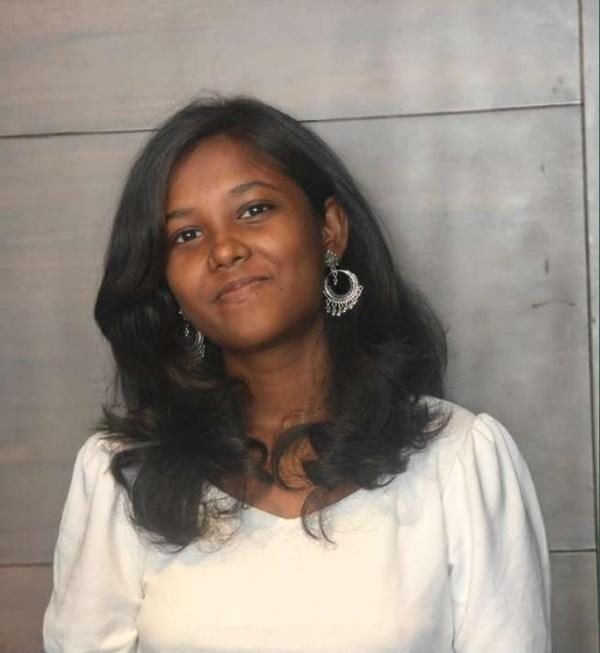

Software
Working knowledge of the tools used across the projects in this portfolio.
- AutoCAD
- Revit
- 3ds Max
- Photoshop
Architecture · Chennai, India
Sharon Samathanam A
Fourth-year B.Arch student at Hindustan Institute of Science and Technology, Chennai.
A little about me

Sharon Samathanam A · Architecture studentHello! I’m Sharon Samathanam A, a fourth-year B.Arch student at Hindustan Institute of Science and Technology, Chennai.
I see architecture as a process of turning imagination into something tangible. I enjoy exploring ideas through freehand sketching and physical model making, where creativity meets precision. I am particularly drawn to the visual and experimental side of design, finding joy in expressing concepts through drawings, forms, and spatial compositions.
With a working knowledge of AutoCAD, Revit, 3ds Max, and Photoshop, I continue to explore different ways of developing and presenting architectural ideas. Each project is an opportunity for me to experiment, learn, and discover new possibilities in design.
More about my practiceAcademic path
Hindustan Institute of Science and Technology
Chennai, Tamil Nadu
The original portfolio identifies Sharon as a fourth-year B.Arch student; no graduation date was specified.
Tools & approach
A curious, hands-on design process — moving between the drawing board, digital tools and physical models.
Working knowledge of the tools used across the projects in this portfolio.
Freehand sketching, physical model making, and expressing concepts through drawings, forms and spatial compositions.
Spatial planning, natural lighting, ventilation, circulation, functional zoning, landscape design and working drawings.
Selected work · Academic studios
Four academic studios, each exploring a different relationship between people, place and built form.
A home framed around the lake.
A functional and comfortable 4BHK residence designed for a family, incorporating their lifestyle needs and a dedicated viewpoint overlooking Perungudi Lake.
Spatial planning, natural lighting, ventilation and privacy shape the design, with a focus on maximizing the northern lake view through indoor–outdoor connectivity.
A compact city within the city.
A multi-storey business hotel with accommodation, conference, dining and recreational facilities, focused on functional zoning and efficient circulation. The design explores architectural form, courtyard spaces, terraced podiums and natural lighting.
*The supplied portfolio contents page calls this project “General Hotel”; the project board identifies it as the Urban Business Hospitality Centre.
Care shaped by climate, light and landscape.
A 100-bed general hospital with essential healthcare departments, inpatient and outpatient facilities, diagnostics and emergency care, plus the supporting infrastructure for comprehensive medical services.
Functional zoning and a clear circulation hierarchy meet tropical climate response, building orientation, a double-skin facade, passive cooling, natural daylighting, therapeutic landscaping, sustainable materials and energy efficiency.
A softer edge between city and lake.
Reclaiming degraded land near Agaram Lake and transforming it into an accessible, sustainable public park. The project restores the landscape while creating an inclusive outdoor place for the community.
Walking paths, green spaces, shaded seating, children’s play areas and waterfront viewpoints support daily use. Native plantation, soil restoration and rainwater management enhance biodiversity and improve the ecological condition of the site.
Academic studio projects · Drawings and visualizations shown are original portfolio work.
Experience & achievements
Academic design studios
Four studio projects across semesters 2, 6 and 7: a residence, a business hotel, a general hospital and a lakeside landscape park, each developed with working drawings and renders.
Internships & certifications
No internships or certifications were listed in the supplied portfolio. This section can be updated as new experience is added.
Beyond the studio
Architecture in the making — alongside two artworks that bring colour, texture and patient observation into the mix.
Open any project image to view it at full size. Use the arrow keys to move through images in that series.
Profile & portfolio
A separate résumé file was not included with the supplied portfolio. You can save or print this complete portfolio as a PDF from your browser, or download the original 13-page boards.
Let's talk
Have a project, a question, or an idea to explore? I’d love to hear from you.
Get in touch